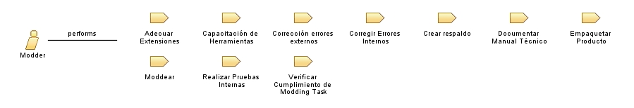

| Role: Modder |
 |
|
Relationships
 |
||
| Categories | ||
|---|---|---|
| Primary Performs | ||
| Additionally Performs | ||
| Modifies |
|
|
| Process Usage |
|
|
Main Description
ModderEl modder es el encargado de generar los cambios en el software objeto de la extensión. Este miembro puede desempeñar una o varias funciones dependiendo de las habilidades y talentos que este posee. Algunos ejemplos de funciones presentes en el modding, se pueden consultar aquí |
More Information
| Concepts |
|---|